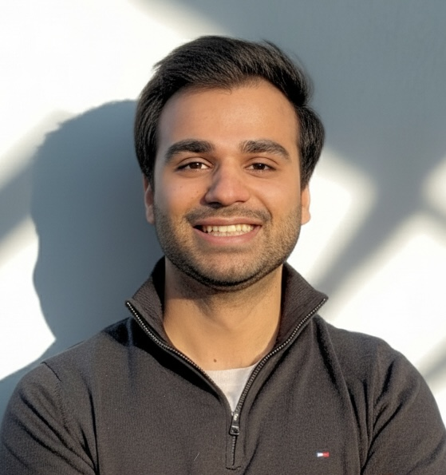

Hi, this is
Maaz Qureshi
Software Research Engineer (5G, AI/ML, Robotics Perception & Autonomy)


Hi, this is
Software Research Engineer (5G, AI/ML, Robotics Perception & Autonomy)
Get To Know More
I build intelligent software that combine perception, autonomy, and AI/ML software engineering. My work spans multi-robot SLAM and volumetric mapping, manipulation: motion planning, mmWave 4D radar + RGB-D perception, connected robotics over 5G mmWave wireless communication, and computational intelligence: reinforcenment learning (RL & IL).
During my M.A.Sc. at the University of Waterloo, I worked with Dr. William Melek and Dr. George Shaker, collaborating with Apple, UW RoboHub, Keysight, and Rogers on connected robotics systems.
Earlier in my life, I developed strong interest for swarm robotics and ending up developing novel software-hardware autonomy and won 3rd best engineering project in b.sc. Later, I supervised the NUST University team in iMech United Kingdom 2022 cometition for developing hexacopter for locust swarm autonomy mission.

Jan 2024 – Aug 2025
Browse My
Distributed volumetric mapping integrating ORB-SLAM3 (front-end), TSDF–Octree fusion, 4D mmWave radar + RGB-D perception, and 5G offloading for real-time mapping under occlusions and degraded visibility.
Automated collaborative-robot framework using OMPL RRT-Connect and quaternion kinematics for high-precision mmWave antenna radiation pattern measurement in 3D space.

Integrated LLaMA 3 with gesture and vision sensing for real-time multimodal control of NAO robot, enabling non-verbal HRI via IMU-based motion interpretation.

Developed synchronized control and formation algorithms for multi-robot UGV teams enabling coordinated navigation, wireless peer-to-peer communication, and real-time trajectory execution.

Structure inspection of the NJHEP dam using multi-beam sonar, profiling sonar, and monochrome camera on ROVs/AUVs over 18 km tethered operation — the largest inspection of its kind in South Asia.

Integrated Oculus 750d sonar on a custom ROV frame and performed underwater crack-propagation analysis at 9m depth and 2.3 m/s water velocity.

Designed an autonomous robot integrating facial recognition, RFID-based navigation, and multi-pill dispensing for safe patient-care workflows during COVID-19.
Explore My
AI & Robotics Software Engineer
Cobionix Corporation

Jan 2024 – Jul 2025
Waterloo, Canada
Research Assistant — Software Engineering
Apple Inc. (Confidential / NDA)

Jan 2024 – Sept 2025
Waterloo, Canada
Autonomy Software Graduate Researcher
University of Waterloo — RoboHub

Sept 2024 – Dec 2024
Waterloo, Canada
Research Internship — Motion Planning Software
Keysight Technologies
Software Engineer — MITACS Research Internship
Rogers Communications

May 2022 – Dec 2023
Islamabad + Australia
Asset Integrity Engineer II — Software
Abyss Solutions Inc.
Get in Touch